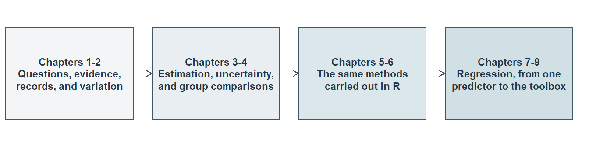

Part One: Foundations, Regression, and Generalized Linear Models
An Introduction to the Chapters and How They Fit Together
What Part One Offers
Quantitative Methods for Social and Behavioral Research develops the statistical understanding needed to read empirical studies, interpret their results, and conduct quantitative research. Part One is where the book begins: fourteen numbered chapters that start with what a study asks and how it produces its evidence, and end with regression models for a range of outcomes. It is written for postgraduate students and applied researchers. A mean, an interval, or a regression coefficient becomes useful when a reader understands what it describes, how it was obtained, and which question it helps answer.
Some introductory familiarity with statistics and algebra is useful, and little else is assumed. Each chapter explains the notation it uses and develops its calculations in worked steps, so the algebra arrives with the idea that needs it. Calculus and proof-based mathematical statistics are not prerequisites. Chapters 1–4 can be read without running R or SPSS: Chapter 1 introduces the research journey, and Chapters 2–4 teach statistics directly, through explanations, figures, and worked calculations. Computation joins the statistics in Chapters 5 and 6.
Results are rounded to four decimals from full-precision computation, with trailing zeros dropped (3.1 rather than 3.1000), unless a source’s own precision applies.
How the Chapters Build on Each Other
Part One contains fourteen chapters. The first nine establish a route from questions and records to regression. Chapter 1, The Quantitative Research Journey, orients the reader in questions, evidence, design, and interpretation. Chapter 2, Data, Distributions, and Variation, develops records, distributions, and variation across repeated samples. Chapter 3, Estimates, Uncertainty, and Statistical Tests, develops estimation, intervals, and tests. Chapter 4, Group Comparisons with Analysis of Variance, develops comparisons among several groups. Chapter 5, Description and Basic Inference with R, and Chapter 6, Group Comparisons and Statistical Modelling with R, make those foundations executable. Chapters 7–9 then develop regression from one predictor to the regression toolbox: Chapter 7, Simple Linear Regression; Chapter 8, Multiple Regression I: Conditioning, Checks, and Coordinated Questions; and Chapter 9, Multiple Regression II: Categorical Predictors, Model Comparison, Nonlinearity, and Robust Uncertainty.
Chapters 10–14 extend the regression framework to conditional relationships, noncontinuous outcomes and prediction, then return to the design of a study and the limits of its claims. Interaction changes how a relationship varies across conditions; generalized linear models change the outcome model; validation asks how a fitted rule performs on new cases; and causal design asks which comparisons can support an intervention claim.
Table 1 states the question each chapter answers. Chapters 1–9 are available on the website. Chapters 10–14 are not yet available; their rows outline the continuation of the curriculum.
| Chapter | The question it answers |
|---|---|
| 1. The Quantitative Research Journey | How does a study turn a concern into a question, produce evidence that bears on it, and support a bounded answer? |
| 2. Data, Distributions, and Variation | What do recorded data show about one variable, about groups and relationships, and how much would a summary change across repeated samples? |
| 3. Estimates, Uncertainty, and Statistical Tests | What can one observed sample tell us about a target quantity, and how much uncertainty surrounds that answer? |
| 4. Group Comparisons with Analysis of Variance | How do the means of several groups or crossed conditions differ, and which of those comparisons can a study support? |
| 5. Description and Basic Inference with R | How are the descriptions and inferences of Chapters 2 and 3 computed, checked, and reported in R? |
| 6. Group Comparisons and Statistical Modelling with R | How are group comparisons stated, fitted, and compared as statistical models in R, and how does repetition check what a procedure delivers? |
| 7. Simple Linear Regression | How does an outcome’s mean change with one predictor, and how well does a fitted line describe, estimate, and predict it? |
| 8. Multiple Regression I: Conditioning, Checks, and Coordinated Questions | What does a comparison on one predictor mean when the other predictors are held fixed, and how can one set of records answer several coordinated questions? |
| 9. Multiple Regression II: Categorical Predictors, Model Comparison, Nonlinearity, and Robust Uncertainty | How can a regression’s mean part be changed or compared, and its uncertainty recalculated, when the question or the data call for it? |
| 10. Interaction and Moderation | When does a relationship differ across the values or groups of another variable, and how is that difference estimated and reported? |
| 11. Binary Logistic Regression | How does the probability of a yes-or-no outcome differ with predictors, and on which scale is that difference best reported? |
| 12. Extending the GLM: Nominal, Ordinal, and Count Outcomes | How can regression represent outcomes that are unordered categories, ordered categories, or counts? |
| 13. Prediction, Cross-Validation, and Regularization | How accurately will a fitted rule predict new cases at the moment the prediction is needed? |
| 14. Regression Pitfalls and Causal Design | When does a regression comparison support the claim made from it, and what must a design supply for a causal claim? |
Each idea has one principal home, and later chapters use it rather than teach it again. Chapter 1 previews uncertainty while reading a study; Chapter 2 develops sampling distributions and the standard error through repeated samples; Chapter 3 develops their inferential use and states the conditions they require. Chapter 2 explains the descriptive ingredients of group variation; Chapter 4 develops the full analysis-of-variance decomposition and its inferential use, comparing one common mean with group means and an additive model with a model that includes interaction. Where a later chapter needs an earlier idea, it recalls it briefly and then puts it to work in the new setting.
How to Read a Chapter and Use the Concept Reference
The numbered chapters share an arrangement. A Chapter overview box opens the chapter with the route it follows and what a reader will be able to do afterwards. Numbered sections develop the material in order. A closing Reading Bridge brings the principal ideas together and connects them to the next chapter, and a selective Key terms table gives a compact reference to the concepts explained principally there. Unnumbered material follows the numbered sections: exercises for working with the ideas, appendices holding fuller derivations and specialized extensions, and the references. The arrangement keeps the main explanation distinct from fuller derivations and specialized extensions.
There are two sensible routes through the chapters. The first is the chapter sequence. The second pairs statistics with computation: Chapters 2 and 3 with Chapter 5, then Chapters 3 and 4 with Chapter 6. Either way, follow a method from its data and question through its calculation to its interpretation; a result separated from the question it answers is difficult to use.
The Part One Concept Reference is published beside this introduction. It gathers the Key terms tables of Chapters 1–14 and of Argument Chapters A and B, one table for each chapter, so a term appears with its meaning under the chapter that explains it principally. A further table lists the procedures of Chapters 3 and 4 with what each estimates and the conditions it relies on, and a closing table records the notation that several chapters share. It is a place to look something up while reading rather than a substitute for reading, because first-use explanations and worked examples stay in the chapters themselves.
Readers who would like to run R without installing anything can use the public browser practice pages that accompany Chapters 3 and 4.
What Comes Later
Three argument chapters extend the argument-based approach. Argument Chapter A, How to Read a Quantitative Study as an Argument, develops the reading, evaluation, and construction of one question-level argument. Argument Chapter B, Extending the Argument-Based Approach to Quantitative Studies, develops arguments with several statistical strands and studies with coordinated questions. Argument Chapter C concerns arguments involving latent variables or an additional measurement layer, drawing on Part Two. The argument chapters are optional, and no numbered chapter depends on them.
Argument Chapter C is reserved for that further development.
Part Two of the book turns to latent-variable modeling, where the variable of primary interest is one that no column of the data set holds. Its twelve chapters proceed from factor analysis and measurement models to structural systems, causal identification, indirect and conditional relationships, group comparisons, incomplete data, change and study planning.